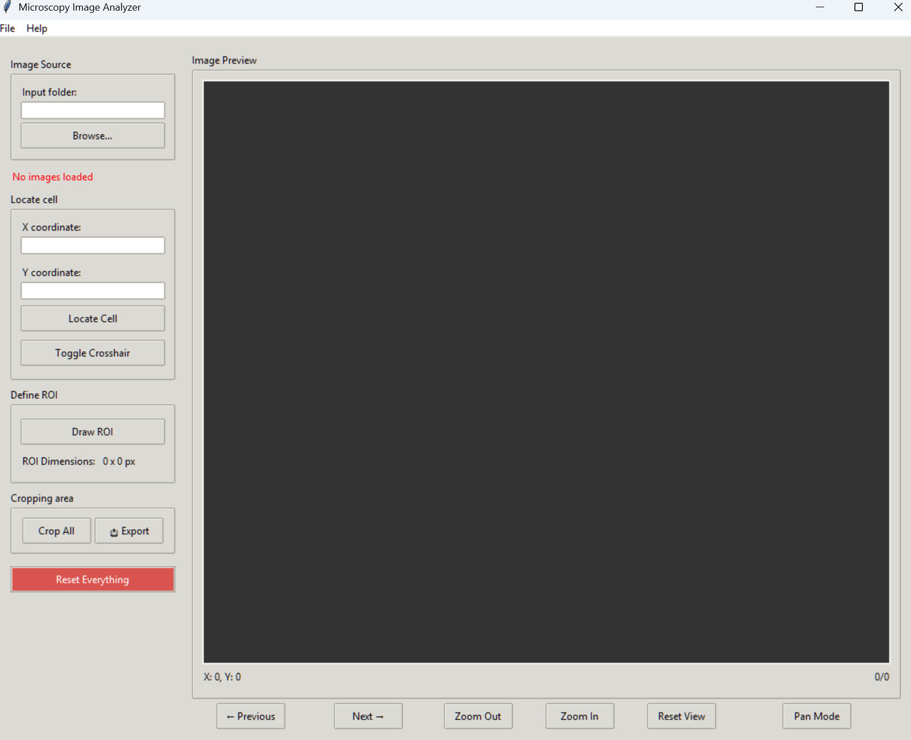

Featured Project
Microscopy Image Analyzer
A professional GUI application for processing microscopy timeframe images, developed to streamline research workflows. Features interactive ROI selection, batch processing of timeframe sequences, and professional animation export capabilities. This tool bridges the gap between raw microscopy data and publication-ready figures, saving valuable research time.